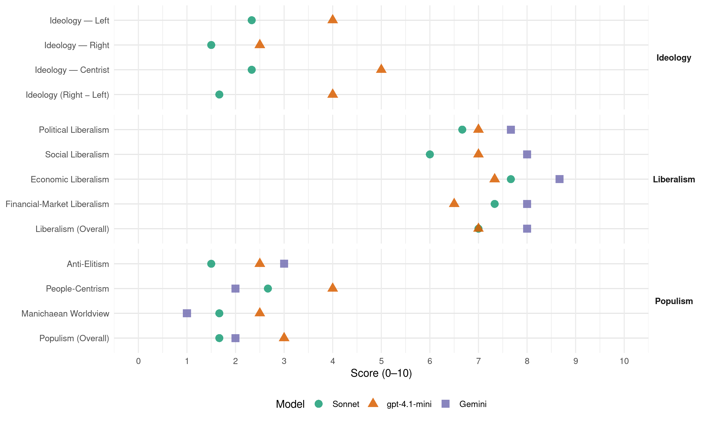

UN (Peru, 2006)
manifesto_id 179051_200604
Get full text: This site shows derived annotations and short verbatim quotes only. The full manifesto text is © Manifesto Project / WZB — obtain it via manifesto-project.wzb.eu using the manifesto_id above.
Headline scores
| Dimension | Sonnet | gpt-4.1-mini | Gemini |
|---|---|---|---|
| Populism (Overall) | 1.7 | 3.0 | 2.0 |
| Anti-Elitism | 1.5 | 2.5 | 3.0 |
| People-Centrism | 2.7 | 4.0 | 2.0 |
| Manichaean Worldview | 1.7 | 2.5 | 1.0 |
| Ideology (Right − Left) | 1.7 | 4.0 | – |
| Liberalism (Overall) | 7.0 | 7.0 | 8.0 |
| Political Liberalism | 6.7 | 7.0 | 7.7 |
| Social Liberalism | 6.0 | 7.0 | 8.0 |
| Economic Liberalism | 7.7 | 7.3 | 8.7 |
| Financial-Market Liberalism | 7.3 | 6.5 | 8.0 |
Evidence per dimension
Economic Liberalism
Gemini · score 8.0 · verified · chunk 1
“asegurar el correcto funcionamiento de los mecanismos de mercado”
corresponde al Estado, a fin de asegurar el correcto funcionamiento de los mecanismos de mercado. Similarmente, se
Gemini · score 9.0 · verified · chunk 2
“mercado funcione eficiente y competitivamente”
estables para que el mercado funcione eficiente y competitivamente. Su labor no debe ser
Gemini · score 9.0 · verified · chunk 3
“Asegurar la libre competencia en la comercialización”
Establecer plazos máximos para el otorgamiento de las autorizaciones relacionadas con el sector construcción… Asegurar la libre competencia en la comercialización de todos los bienes y servicios de construcción.
gpt-4.1-mini · score 7.0 · verified · chunk 1
“una economía formal e integrada totalmente con el resto del mundo”
En el campo económico, seremos un país con pleno empleo, en el contexto de una economía formal e integrada totalmente con el resto del mundo, sobre todo con aquellos países con los cuales nuestra economía es complementaria; una economía con un alto nivel de ahorro interno y alta inversión, tanto nacional como extranjera y con un alto grado de competitividad.
gpt-4.1-mini · score 8.0 · verified · chunk 2
“El rol del Estado debe ser fundamentalmente subsidiario, regulador y promotor”
El rol del Estado debe ser fundamentalmente subsidiario, regulador y promotor, con reglas de juego justas y estables para que el mercado funcione eficiente y competitivamente. Su labor no debe ser la de sustituir al sector privado, ni intervenir en el mercado, sino sólo la de ejercer un rol subsidiario y de promoción de condiciones adecuadas para su desarrollo y competitividad.
gpt-4.1-mini · score 7.0 · verified · chunk 3
“Se promoverán las MYPES de “acumulación” a través de instituciones y programas de fomento económico y productivo (PROMPYME, PROMPEX, CITES, por ejemplo), con una clara orientación de mercado”
…Se asistirá a las MYPES de “subsistencia” vía instituciones y programas de apoyo social. Se promoverán las MYPES de “acumulación” a través de instituciones y programas de fomento económico y productivo (PROMPYME, PROMPEX, CITES, por ejemplo), con una clara orientación de mercado. INFRAESTRUCTURA TRANSPORTES Y COMUNICACIONES…
Sonnet · score 7.0 · verified · chunk 1
“mecanismos de mercado protegiendo los legítimos intereses”
el rol regulador del Estado para asegurar el buen funcionamiento de los mecanismos de mercado protegiendo los legítimos intereses de consumidores, inversionistas
Sonnet · score 8.0 · verified · chunk 2
“rol del Estado debe ser fundamentalmente subsidiario”
El rol del Estado debe ser fundamentalmente subsidiario, regulador y promotor, con reglas de juego justas y estables para que el mercado funcione eficiente y competitivamente.
Sonnet · score 8.0 · verified · chunk 3
“libre competencia en la comercialización de todos los bienes”
Asegurar la libre competencia en la comercialización de todos los bienes y servicios de construcción
Financial-Market Liberalism
Gemini · score 8.0 · verified · chunk 2
“promover el libre flujo de capitales”
exigencias del mercado y promover el libre flujo de capitales, evitando todo tipo de
Gemini · score 8.0 · verified · chunk 3
“desarrollo de instrumentos financieros hipotecarios”
Priorizar igualmente el desarrollo de instrumentos financieros hipotecarios, tanto la emisión de los mismos, como las operaciones de mercado secundario
gpt-4.1-mini · score 6.0 · verified · chunk 1
“manejo económico ordenado, realista, permanente, transparente y sostenible”
Un país con un manejo económico ordenado, realista, permanente, transparente y sostenible, con capacidad de hacer frente a crisis externas, consecuencia de tal manejo y de un bajo nivel de endeudamiento público.
gpt-4.1-mini · score 7.0 · verified · chunk 2
“Fortalecer la institucionalización de los mercados de capitales”
Fortalecer la institucionalización de los mercados de capitales, para promover un mayor número de empresas que coticen en bolsa y que transen sus valores en el mercado, exigiendo normas de buen gobierno corporativo que promueva la transparencia y proteja los derechos de los accionistas minoritarios.
Sonnet · score 7.0 · verified · chunk 1
“fortalecer los entes reguladores, a fin de asegurar”
fortalecer los entes reguladores, a fin de asegurar la completa transparencia y el buen funcionamiento de las reglas de mercado y eliminar la politización
Sonnet · score 8.0 · verified · chunk 2
“libre flujo de capitales, evitando todo tipo de controles”
Mantener un régimen de tipo de cambio flotante, libre y único que responda a las exigencias del mercado y promover el libre flujo de capitales, evitando todo tipo de controles.
Sonnet · score 7.0 · verified · chunk 3
“instrumentos financieros hipotecarios, tanto la emisión”
Priorizar igualmente el desarrollo de instrumentos financieros hipotecarios, tanto la emisión de los mismos, como las operaciones de mercado secundario
Political Liberalism
Gemini · score 8.0 · verified · chunk 1
“democracia y sus instituciones se han consolidado”
En el campo político, tendremos un país donde la democracia y sus instituciones se han consolidado. Un país donde
Gemini · score 8.0 · verified · chunk 2
“jueces justos y severos”
con la participación de jueces justos y severos. Esa es la línea de acción
Gemini · score 7.0 · verified · chunk 3
“discrecionalidad por parte de funcionarios públicos”
simplificación administrativa de los trámites y procedimientos correspondientes al sector Vivienda, evitando la duplicidad de las normas y la discrecionalidad por parte de funcionarios públicos y entes profesionales
gpt-4.1-mini · score 8.0 · verified · chunk 1
“un país donde la democracia y sus instituciones se han consolidado”
En el campo político, tendremos un país donde la democracia y sus instituciones se han consolidado. Un país donde el Estado de Derecho prevalezca sin interrupciones, con la necesaria institucionalidad política. Una democracia basada en la existencia de partidos políticos fuertes y un Congreso comprometido con los problemas fundamentales del país y sus soluciones.
gpt-4.1-mini · score 7.0 · verified · chunk 2
“participación de jueces justos y severos”
Eso ha ocurrido cuando la policía los ha capturado, acumulado las evidencias en su contra en colaboración del Ministerio Público, y el gobierno, a través de los procuradores respectivos –Ministerio del Interior- ha actuado con eficacia y tenacidad para hacer que se aplique la ley, contando con la participación de jueces justos y severos.
gpt-4.1-mini · score 6.0 · verified · chunk 3
“Asegurar la libre competencia en la comercialización de todos los bienes y servicios de construcción”
…Revisar la legislación existente, con el objetivo de simplificarla, eliminando duplicaciones y contraposiciones de normas. Asegurar la libre competencia en la comercialización de todos los bienes y servicios de construcción. Establecer plazos máximos para el otorgamiento de las autorizaciones relacionadas con el sector construcción…
Sonnet · score 7.0 · verified · chunk 1
“la democracia y sus instituciones se han consolidado”
En el campo político, tendremos un país donde la democracia y sus instituciones se han consolidado. Un país donde el Estado de Derecho prevalezca
Sonnet · score 7.0 · verified · chunk 2
“naturales en toda democracia”
movilizaciones en demanda de alguna reivindicación, naturales en toda democracia, se transformen rutinariamente en actos de violencia
Sonnet · score 6.0 · verified · chunk 3
“transparencia en el otorgamiento de concesiones”
A fin de asegurar la transparencia en el otorgamiento de concesiones, dar la máxima difusión tanto en el país como en el extranjero
Liberalism (Overall)
Gemini · score 8.0 · verified · chunk 1
“democracia y sus instituciones se han consolidado”
En el campo político, tendremos un país donde la democracia y sus instituciones se han consolidado. Un país donde
Gemini · score 8.0 · verified · chunk 2
“mercado funcione eficiente y competitivamente”
estables para que el mercado funcione eficiente y competitivamente. Su labor no debe ser
Gemini · score 8.0 · verified · chunk 3
“Asegurar la libre competencia en la comercialización”
Establecer plazos máximos para el otorgamiento de las autorizaciones relacionadas con el sector construcción… Asegurar la libre competencia en la comercialización de todos los bienes y servicios de construcción.
gpt-4.1-mini · score 7.0 · verified · chunk 1
“un país donde la democracia y sus instituciones se han consolidado”
En el campo político, tendremos un país donde la democracia y sus instituciones se han consolidado. Un país donde el Estado de Derecho prevalezca sin interrupciones, con la necesaria institucionalidad política. Una democracia basada en la existencia de partidos políticos fuertes y un Congreso comprometido con los problemas fundamentales del país y sus soluciones.
gpt-4.1-mini · score 7.0 · verified · chunk 2
“El rol del Estado debe ser fundamentalmente subsidiario, regulador y promotor”
El rol del Estado debe ser fundamentalmente subsidiario, regulador y promotor, con reglas de juego justas y estables para que el mercado funcione eficiente y competitivamente. Su labor no debe ser la de sustituir al sector privado, ni intervenir en el mercado, sino sólo la de ejercer un rol subsidiario y de promoción de condiciones adecuadas para su desarrollo y competitividad.
gpt-4.1-mini · score 7.0 · verified · chunk 3
“Se promoverán las MYPES de “acumulación” a través de instituciones y programas de fomento económico y productivo (PROMPYME, PROMPEX, CITES, por ejemplo), con una clara orientación de mercado”
…Se asistirá a las MYPES de “subsistencia” vía instituciones y programas de apoyo social. Se promoverán las MYPES de “acumulación” a través de instituciones y programas de fomento económico y productivo (PROMPYME, PROMPEX, CITES, por ejemplo), con una clara orientación de mercado. INFRAESTRUCTURA TRANSPORTES Y COMUNICACIONES…
Sonnet · score 7.0 · verified · chunk 1
“Estado de Derecho prevalezca sin interrupciones”
Un país donde el Estado de Derecho prevalezca sin interrupciones, con la necesaria institucionalidad política.
Sonnet · score 7.0 · verified · chunk 2
“mercado funcione eficiente y competitivamente”
con reglas de juego justas y estables para que el mercado funcione eficiente y competitivamente. Su labor no debe ser la de sustituir al sector privado
Sonnet · score 7.0 · verified · chunk 3
“libre competencia en la comercialización de todos los bienes”
Asegurar la libre competencia en la comercialización de todos los bienes y servicios de construcción
Anti-Elitism
Gemini · score 3.0 · verified · chunk 1
“decisión autoritaria de quienes monopolizaban el poder”
ya sea por la decisión autoritaria de quienes monopolizaban el poder político, o por la voluntad de un grupo
gpt-4.1-mini · score 2.0 · verified · chunk 1
“la ciudadanía es testigo de cómo funcionarios, servidores, magistrados, representantes políticos y autoridades ejercen indebidamente sus funciones”
La ciudadanía es testigo de cómo funcionarios, servidores, magistrados, representantes políticos y autoridades ejercen indebidamente sus funciones, para beneficiarse a sí mismos o a terceros. Sobornos, grandes o pequeños, apropiación de fondos públicos, fraude, favoritismo y otras irregularidades son modalidades del mismo fenómeno: la utilización del poder público para la obtención de beneficios privados.
gpt-4.1-mini · score 3.0 · verified · chunk 2
“la percepción de que ello constituye un instrumento para obtener prebendas”
En su origen, estas manifestaciones tienen motivaciones de índole económica o social. En gran parte se motivan en el letargo de las autoridades para resolver los reclamos de la población y en la percepción de que ello constituye un instrumento para obtener prebendas. La situación de pobreza en que se desenvuelven la mitad de los peruanos, es otro de los factores que subyace a esas manifestaciones.
Sonnet · score 2.0 · mixed · chunk 1
“la corrupción grande y pequeña se sienten a salvo”
Los protagonistas de la corrupción grande y pequeña se sienten a salvo pues tienen mucho que ganar y poco que perder con la corrupción.
Sonnet · score 2.0 · verified · chunk 2
“ineficiente (e inoperante) aparato estatal”
Un ineficiente (e inoperante) aparato estatal que no se percibe al servicio del ciudadano, con un deficiente manejo
Sonnet · score 1.0 · verified · chunk 3
“dificultades para la formalización creadas por el propio Estado”
su alto grado de informalidad, causado, en parte por las dificultades para la formalización creadas por el propio Estado. Esta informalidad tiene como consecuencia
Ideology — Centrist
gpt-4.1-mini · score 6.0 · verified · chunk 1
“la participación y vigilancia de la sociedad civil”
elaborará un plan anual de lucha contra la corrupción para ser desarrollado en todas las instituciones y entidades del Estado, con énfasis en políticas preventivas anticorrupción y con la participación y vigilancia de la sociedad civil. propondrá a todas las instituciones públicas, incluyendo a los poderes del Estado, medidas para reducir los múltiples procedimientos y trabas burocráticas, tanto a la actividad empresarial como a la ciudadanía en general,
gpt-4.1-mini · score 4.0 · verified · chunk 2
“trabajo coordinado entre la PNP, el ministerio público, el Poder Judicial”
Para que esto ocurra se requiere un trabajo coordinado entre la PNP, el ministerio público, el Poder Judicial y el Instituto Nacional Penitenciario (INPE) y, sobre todo, una profunda reforma en esas instituciones.
Sonnet · score 3.0 · verified · chunk 1
“economía social de mercado”
dentro del marco de una economía social de mercado, que involucre a los gobiernos distritales, provinciales, regionales y central
Sonnet · score 2.0 · verified · chunk 2
“interés nacional”
Fortalecer la posición internacional del Perú en función del interés nacional.
Sonnet · score 2.0 · verified · chunk 3
“dotar de vivienda al mayor número de peruanos”
a fin de dotar de vivienda al mayor número de peruanos, sobre todo en provincias
Ideology — Left
gpt-4.1-mini · score 5.0 · verified · chunk 1
“promoviendo con urgencia la satisfacción de sus necesidades básicas, y diseñar políticas públicas destinadas a generar igualdad de oportunidades”
Poner especial énfasis en garantizar los derechos de los menos favorecidos, en un sentido económico y social, promoviendo con urgencia la satisfacción de sus necesidades básicas, y diseñar políticas públicas destinadas a generar igualdad de oportunidades, como elementos indispensables para su desarrollo personal y familiar.
gpt-4.1-mini · score 3.0 · verified · chunk 2
“situación de pobreza en que se desenvuelven la mitad de los peruanos”
En su origen, estas manifestaciones tienen motivaciones de índole económica o social. En gran parte se motivan en el letargo de las autoridades para resolver los reclamos de la población y en la percepción de que ello constituye un instrumento para obtener prebendas. La situación de pobreza en que se desenvuelven la mitad de los peruanos, es otro de los factores que subyace a esas manifestaciones.
Sonnet · score 3.0 · verified · chunk 1
“rol redistributivo del Estado para mejorar”
priorizar el rol redistributivo del Estado para mejorar las oportunidades de la población, a través de la educación y la salud
Sonnet · score 2.0 · verified · chunk 2
“lucha contra la pobreza”
Se tendrá especial cuidado en vincularla con: a) La lucha contra la corrupción; b) El cuidado del medio ambiente; c) La lucha contra la pobreza
Sonnet · score 2.0 · verified · chunk 3
“asistirá a las MYPES de subsistencia vía instituciones”
Se asistirá a las MYPES de “subsistencia” vía instituciones y programas de apoyo social
Ideology (Right − Left)
gpt-4.1-mini · score 5.0 · verified · chunk 1
“la ciudadanía es testigo de cómo funcionarios, servidores, magistrados, representantes políticos y autoridades ejercen indebidamente sus funciones”
La ciudadanía es testigo de cómo funcionarios, servidores, magistrados, representantes políticos y autoridades ejercen indebidamente sus funciones, para beneficiarse a sí mismos o a terceros. Sobornos, grandes o pequeños, apropiación de fondos públicos, fraude, favoritismo y otras irregularidades son modalidades del mismo fenómeno: la utilización del poder público para la obtención de beneficios privados.
gpt-4.1-mini · score 3.0 · verified · chunk 2
“trabajo coordinado entre la PNP, el ministerio público, el Poder Judicial”
Para que esto ocurra se requiere un trabajo coordinado entre la PNP, el ministerio público, el Poder Judicial y el Instituto Nacional Penitenciario (INPE) y, sobre todo, una profunda reforma en esas instituciones.
Sonnet · score 2.0 · verified · chunk 1
“economía social de mercado”
dentro del marco de una economía social de mercado, que involucre a los gobiernos distritales, provinciales, regionales y central
Sonnet · score 2.0 · verified · chunk 2
“ineficiente (e inoperante) aparato estatal”
Un ineficiente (e inoperante) aparato estatal que no se percibe al servicio del ciudadano
Sonnet · score 1.0 · verified · chunk 3
“dificultades para la formalización creadas por el propio Estado”
causado, en parte por las dificultades para la formalización creadas por el propio Estado
Ideology — Right
gpt-4.1-mini · score 3.0 · verified · chunk 1
“la razón por la que la ley civil se ocupa del matrimonio es su fin, o por lo menos su posibilidad procreativa”
El fundamento de la sociedad es la familia, el de la familia el matrimonio y el de éste, la unión de varón y mujer. La razón por la que la ley civil se ocupa del matrimonio es su fin, o por lo menos su posibilidad procreativa, y la consecuente incorporación de nuevos ciudadanos, no el fin sentimental.
gpt-4.1-mini · score 2.0 · verified · chunk 2
“bloqueos de carreteras y vías férreas, los ataques violentos”
Los bloqueos de carreteras y vías férreas, los ataques violentos a instalaciones públicas y privadas, la ocupación permanente del centro de Lima y otras ciudades del país, son actos inaceptables que deben cesar.
Sonnet · score 2.0 · verified · chunk 1
“fundamento de la sociedad es la familia”
El fundamento de la sociedad es la familia, el de la familia el matrimonio y el de éste, la unión de varón y mujer.
Sonnet · score 1.0 · verified · chunk 2
“combate al narcotráfico y el terrorismo”
la cooperación y coordinación eficiente de políticas de combate al narcotráfico y el terrorismo.
Manichaean Worldview
Gemini · score 1.0 · verified · chunk 1
“un país donde no exista corrupción”
un sistema judicial justo y eficiente y en general, un país donde no exista corrupción de ninguna índole.
gpt-4.1-mini · score 3.0 · verified · chunk 1
“la principal responsabilidad debe recaer entonces en quienes tomaron la decisión de iniciar la lucha armada”
La principal responsabilidad debe recaer entonces en quienes tomaron la decisión de iniciar la lucha armada para conquistar el poder y en quienes actuaron a su favor, sea por ignorancia supina o por compromiso ideológico; todos ellos, en conjunto, deben responder por el genocidio de miles de peruanos. Coherentemente, el Estado peruano debe mantener una actitud inflexible para con los causantes del terror y la violencia,
gpt-4.1-mini · score 2.0 · verified · chunk 2
“actos inaceptables que deben cesar”
Los bloqueos de carreteras y vías férreas, los ataques violentos a instalaciones públicas y privadas, la ocupación permanente del centro de Lima y otras ciudades del país, son actos inaceptables que deben cesar.
Sonnet · score 2.0 · verified · chunk 1
“banda terrorista más radical y feroz”
Nuestro país fue presa de la banda terrorista más radical y feroz que ha existido en el mundo, después de la que fuera liderada por Pol Pot
Sonnet · score 2.0 · verified · chunk 2
“actos inaceptables que deben cesar”
la ocupación permanente del centro de Lima y otras ciudades del país, son actos inaceptables que deben cesar.
Sonnet · score 1.0 · verified · chunk 3
“discrecionalidad aplicada por funcionarios públicos”
en la duplicidad de las mismas y en la discrecionalidad aplicada por funcionarios públicos y entes profesionales
People-Centrism
Gemini · score 2.0 · verified · chunk 1
“elevación cultural del pueblo peruano”
del Estado en instrumentos de elevación cultural del pueblo peruano. Hay que diversificar la programación
gpt-4.1-mini · score 6.0 · verified · chunk 1
“la participación y vigilancia de la sociedad civil”
elaborará un plan anual de lucha contra la corrupción para ser desarrollado en todas las instituciones y entidades del Estado, con énfasis en políticas preventivas anticorrupción y con la participación y vigilancia de la sociedad civil. propondrá a todas las instituciones públicas, incluyendo a los poderes del Estado, medidas para reducir los múltiples procedimientos y trabas burocráticas, tanto a la actividad empresarial como a la ciudadanía en general,
gpt-4.1-mini · score 2.0 · verified · chunk 2
“millones de ciudadanos que ven afectados sus derechos al libre tránsito”
En los últimos años se han extendido los problemas de orden público, perjudicando las actividades públicas y privadas, y sobre todo a millones de ciudadanos que ven afectados sus derechos al libre tránsito, al trabajo, a su vida y seguridad, y a la propiedad.
Sonnet · score 3.0 · verified · chunk 1
“todos nuestros compatriotas tendrán el necesario nivel”
Seremos un país donde todos nuestros compatriotas tendrán el necesario nivel nutricional y acceso a los mejores servicios de salud
Sonnet · score 3.0 · verified · chunk 2
“millones de ciudadanos que ven afectados sus derechos”
perjudicando las actividades públicas y privadas, y sobre todo a millones de ciudadanos que ven afectados sus derechos al libre tránsito
Sonnet · score 2.0 · verified · chunk 3
“dotar de vivienda al mayor número de peruanos”
Fortalecer los programas MiVivienda, Techo Propio y programas complementarios, a fin de dotar de vivienda al mayor número de peruanos, sobre todo en provincias
Populism (Overall)
Gemini · score 2.0 · verified · chunk 1
“decisión autoritaria de quienes monopolizaban el poder”
ya sea por la decisión autoritaria de quienes monopolizaban el poder político, o por la voluntad de un grupo
gpt-4.1-mini · score 4.0 · verified · chunk 1
“la ciudadanía es testigo de cómo funcionarios, servidores, magistrados, representantes políticos y autoridades ejercen indebidamente sus funciones”
La ciudadanía es testigo de cómo funcionarios, servidores, magistrados, representantes políticos y autoridades ejercen indebidamente sus funciones, para beneficiarse a sí mismos o a terceros. Sobornos, grandes o pequeños, apropiación de fondos públicos, fraude, favoritismo y otras irregularidades son modalidades del mismo fenómeno: la utilización del poder público para la obtención de beneficios privados.
gpt-4.1-mini · score 2.0 · verified · chunk 2
“la percepción de que ello constituye un instrumento para obtener prebendas”
En su origen, estas manifestaciones tienen motivaciones de índole económica o social. En gran parte se motivan en el letargo de las autoridades para resolver los reclamos de la población y en la percepción de que ello constituye un instrumento para obtener prebendas. La situación de pobreza en que se desenvuelven la mitad de los peruanos, es otro de los factores que subyace a esas manifestaciones.
Sonnet · score 2.0 · verified · chunk 1
“la justicia sirve intereses y no defiende”
percepción mayoritaria de que existe ineficiencia y corrupción, y de que la justicia sirve intereses y no defiende a la población
Sonnet · score 2.0 · verified · chunk 2
“ineficiente (e inoperante) aparato estatal”
Un ineficiente (e inoperante) aparato estatal que no se percibe al servicio del ciudadano
Sonnet · score 1.0 · verified · chunk 3
“dificultades para la formalización creadas por el propio Estado”
su alto grado de informalidad, causado, en parte por las dificultades para la formalización creadas por el propio Estado
Social Liberalism